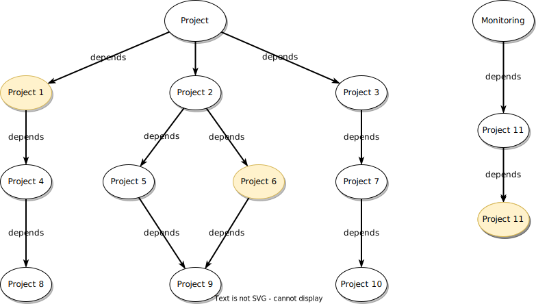
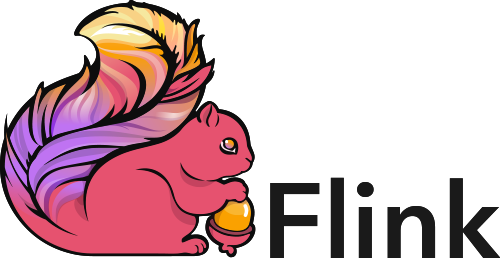
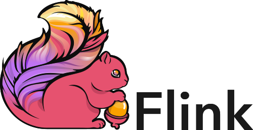

Sustainability beyond funds
We have a problem!
Open Source Dependencies
- How many dependencies?
- And how many dependencies have these?
- How many levels deep?
Let's fund those!
- How much money?
- Which ones do we fund?
- Does it reach where it needs to?
- Are they maintained?
What if there was an additional way?
Extrospective OSPOs
Open Source Program Offices whose focus is to contribute to your dependency graph.
How do we make it work?
- Engineers reporting to the OSPO
- Independent timelines
- Work is 100% open source
Work on what?
2 main options to select which projects to focus on:
- Semantically
- Hierarchically
Picking Projects Semantically
Which projects your company or product depends on the most?
Sort the list by impact on your business and you have your target projects.
Picking Projects Semantically
Picking Projects Semantically
Picking Projects Hierarchically
Similarly as before, but simply focus on your direct dependencies.
Picking Projects Hierarchically
Why doing this?
To make open source projects more sustainable.
- Reduce bus factor
- Share maintenance burden
- Job market for OSS maintainers
- Keep projects open
How do we measure success?
At project level, we want to:
- Lower the time to review
- Lower the number of issues
- Increase number of regular contributors
How do we measure success?
At individual contributor level, we want to:
- Contribute features and bug fixes
- Review pull requests and triage issues
- Increase awareness of the projects
An Example — 
- We focus on 6 projects picked semantically
 



- ~15 people working on upstream projects
- Employ 5 maintainers of our dependencies
Convincing your organization
Sustaining the business
Work in Extrospective OSPOs are directly supporting the viability of the business. Cost of replacement is prohibitive and would kill the business.
Fast reaction
Vulnerabilities will lower. They will still exist, but they will be solved quicker!
Ensure Sustainability
The team can make sure the features needed are kept or will advocate to add new ones.
One is not enough! We need you!
Thanks!
https://jlprat.github.io/sustainability-beyond-funds/foss-backstage.htmlJosep Prat — @jlprat — #extrospectiveOSPO — @aiven_io